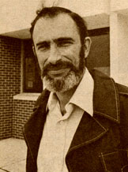
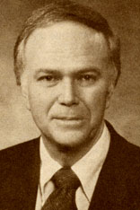
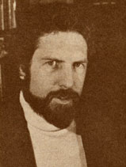

MOM's own Ecoscience columnist has added another sprig of laurel to his wreath! In late May, the Sierra Club presented its highest honor-the John Muir Award-to Paul Ehrlich for his distinguished leadership in national conservation causes. According to club board member Richard Cellarius, Ehrlich "has been a major voice calling us to action to protect the human environment . . . in the true spirit of John Muir".
Stanford University's Bing Professor of Population Studies and Professor of Biological Sciences has also recently published The Golden Door . . . an important study of current U. S. immigration trends and issues (a brief summary of which was published in MOTHER NOS. 60 and 61). In addition to his scholarly activities, Ehrlich is a founder of Zero Population Growth, the national organization devoted to the stabilization of population and the adoption of conservation policies.-PH.
Oregon's Senator Bob Packwood was recently named "Solar Man of the Year" by the Solar Energy Industries Association. The award was made in recognition of Packwood's successful efforts to amend the Windfall Profits Oil Tax bill.
The Packwood amendments-which have been law since July-enable businesses and individuals to qualify for significant tax credits when they purchase and install solar, wind, and geothermal equipment. Among the provisions for individuals: a 40% tax credit (that's a di rect deduction from the amount of tax owed!) on the first $10,000 spent on solar, geothermal, wind, and similar renewable energy installations (as specified by the Internal Revenue Service). This credit is good until 1985.
Business tax credits have been raised to 15% for devices producing process heat from renewable resources and 15% for solar space and water heating, plus new credits of 10% for cogeneration (good through 1982) and 11% for hydro plant retrofits on existing dams. Packwood didn't forget alcohol, either: There's a credit of 30 to 40 cents per gallon on alcohol produced for use in motor fuel mixtures, and the federal tax exemption for gasohol is extended until 1992. Commenting on the award, Packwood noted, "The tremendous potential of our renewable energy supplies must be recognized and utilized. I strongly believe we're on our way." Bravo!-PH.
In the tradition of Leopold Kohr's work (see Newsworthies in MOTHER NO. 60, page 60) is Human Scale, the widely discussed new book by Kirkpatrick Sale. The author of Power Shift (which established the idea of the Sunbelt in the public consciousness) and SDS (a history of the radical student group) views our "growthmania" with an unblinking eye . . . and finds that our romance with-and reliance on-the idea that "bigger is better" has created far more problems than it has solved. According to Sale, our society's rush to "bigness" for the sake of efficiency, economy, and better ways to serve our human needs has resulted in inefficiency, waste, unnecessary expense, and damage to the bodies and spirits of our people.
Sale's answer to the problems of size is summed up in the title of his book: human scale. He proposes that we decentralize government and return power to the local citizens, break cities down into neighborhoods where home and work are within walking (or bicycling) distance, divide factory farms into energy-self-sufficient smaller units, regroup our schools into more manageable-and productive-institutions, and encourage the creation of small worker-owned business organizations .. . while we dismantle the large multinational corporations. You may not agree with Sale's analysis or his conclusions . . . but they're cogently argued and deserve a hearing. Human Scale is published by Coward, McCann & Geoghegan and-is available (for $15.95) at most good bookstores.-PH.
MOTHER notes with sorrow the death of one of the giants of American horticulture, DAVID BURPEE, on June 24. Burpee-who was in his 87th year-had been associated with the company that bore his father's name for 65 years, and will always be remembered for his campaign to make the marigold the national flower .... Praise is due all involved with the short subject entitled "The Solar Film", nominee for an Academy Award. The superb production was directed by ELAINE and SAUL BASS, written by the Basses and STAN HART, and produced by Saul Bass and MICHAEL BRITTON. ROBERT REDFORD was the executive producer .... STEWART BRAND is at it again: The Next Whole Earth Catalog is promised for late fall! . . . ANNE LABASTILLE-author of Woodswoman and winner of the gold medal of the World Wildlife Fund as Conservationist of the Year-has published an account of her adventures as an ecological consultant. Assignment: Wildlife- published by E.P. Dutton-is available in bookstores for $11.95.-PH.
|
 |
 |
 |